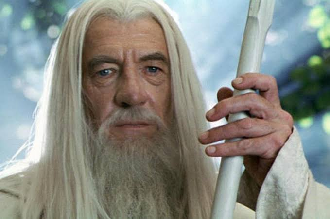
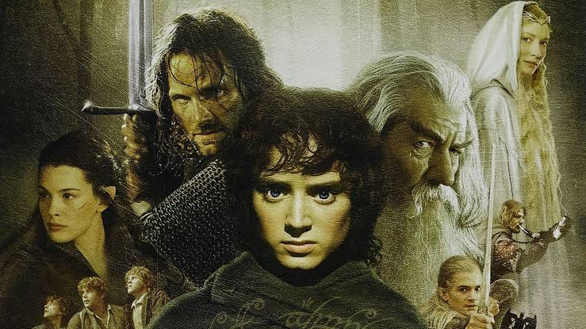

O Senhor Sombrio Sauron forjou o Um Anel para dominar todos os outros anéis de poder e escravizar a Terra-média. Quando o anel é perdido, a busca de Sauron por ele reinicia. O artefato acaba parando nas mãos do jovem hobbit Frodo Bolseiro, no pacífico Condado, após ser herdado de seu tio Bilbo.
Com a orientação do mago Gandalf, Frodo descobre que a única maneira de salvar o mundo é levar o Anel até as fendas da Montanha da Perdição (em Mordor), onde ele foi criado, e destruí-lo no fogo. ajudá-lo nessa missão quase impossível, é formada a Sociedade do Anel, composta por 9 integrantes:
Ao longo da saga, o grupo enfrenta exércitos de orques, traições, as tentações corruptoras do próprio Anel e acaba se dividindo, enquanto os povos livres da Terra-média (Homens, Elfos, Anões, Hobbits e Ents) se unem na Guerra do Anel para deter as forças de Sauron.

